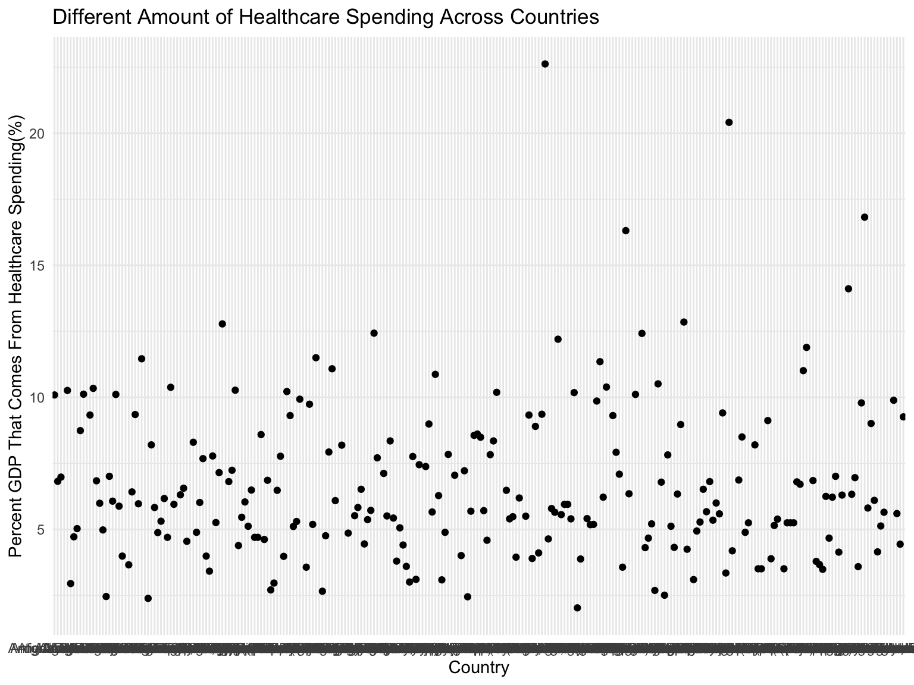
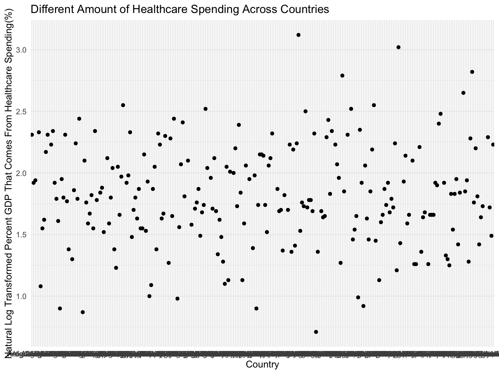

# Percent GDP that comes from health spending
health_spending_percent_gdp = read_csv("./data/WorldBank/health_spending_percent_GDP.csv") %>%
janitor::clean_names() %>%
select(country_name, country_code, x2000:x2016) %>%
pivot_longer(
x2000:x2016,
names_to = "year",
values_to = "health_spending_percent_GDP") %>%
mutate(year = str_remove(year,"x")) %>%
mutate(health_spending_percent_GDP = round(health_spending_percent_GDP, digits = 2)) %>%
mutate(country_name = as.factor(country_name),
country_code = as.factor(country_code))## Parsed with column specification:
## cols(
## .default = col_logical(),
## `Country Name` = col_character(),
## `Country Code` = col_character(),
## `Indicator Name` = col_character(),
## `Indicator Code` = col_character(),
## `2000` = col_double(),
## `2001` = col_double(),
## `2002` = col_double(),
## `2003` = col_double(),
## `2004` = col_double(),
## `2005` = col_double(),
## `2006` = col_double(),
## `2007` = col_double(),
## `2008` = col_double(),
## `2009` = col_double(),
## `2010` = col_double(),
## `2011` = col_double(),
## `2012` = col_double(),
## `2013` = col_double(),
## `2014` = col_double(),
## `2015` = col_double()
## # ... with 1 more columns
## )## See spec(...) for full column specifications.latest_health_spending_scatter =
health_spending_percent_gdp %>%
ggplot(aes(x = country_name, y = health_spending_percent_GDP)) +
geom_point()# log-transformed
health_spending_percent_GDP_log =
health_spending_percent_gdp %>%
mutate(
ln_health_spending = round(log(health_spending_percent_GDP), digits = 2)
)## ggplot (year = 2015): linear + log
health_spending_percent_GDP_log %>%
filter(year == 2015) %>%
ggplot(aes(x = country_name, y = health_spending_percent_GDP)) +
geom_point() +
labs(x = "Country",
y = "Percent GDP That Comes From Healthcare Spending(%)",
title = "Different Amount of Healthcare Spending Across Countries")
health_spending_percent_GDP_log %>%
filter(year == 2015) %>%
ggplot(aes(x = country_name, y = ln_health_spending)) +
geom_point() +
labs(x = "Country",
y = "Natural Log Transformed Percent GDP That Comes From Healthcare Spending(%)",
title = "Different Amount of Healthcare Spending Across Countries")